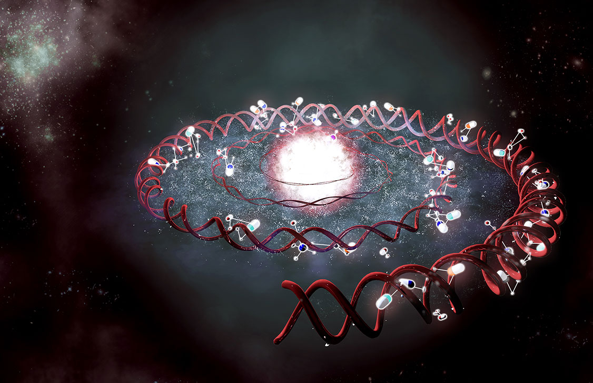

The Expanding Universe
of Pharmacogenomics
Organized by the Pharmacogenomics Research Network (PGRN)
Monday, October 17, 2016
Tuesday, October 18, 2016
Vancouver, Canada
- The agenda includes the following sessions:
- Session 1: Innovative Approaches for Pharmacogenomic Discovery
- Session 2: Pharmacogenomics in Drug Discovery
- Session 3: Technologies in Pharmacogenomic Studies
- Session 4: Panel Discussion: Issues for Clinical Implementation of Pharmacogenomic Testing
- Session 5: Pharmacogenetics in a Human Evoluation Context